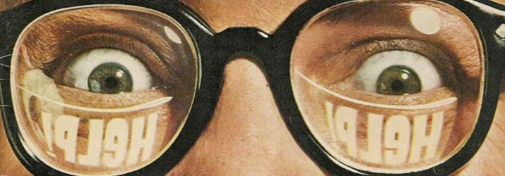

Des faits, du fric, du fun !
Après deux saisons intégralement financées par ses lecteurs, le magazine papier Gonzaï milite
actuellement pour une nouvelle campagne d’abonnement sur Ulule qui se clôturera le 15 décembre.
Mais
alors que nous n’avons jamais semblé aussi proche de ce que Gonzaï doit être à nos yeux (une
alternative
globale à la morosité ambiante portée à bout de bras poilus), manquent encore près de 15 000 €
(250
abonnés) à moins de 20 jours de la deadline. Mission impossible ? Si vous êtes
...
EDEN, Daft Punk, Paris and Cocaïne
Le film Eden qui sort ce mercredi revient sur la période techno French Touch. On
pensait
avoir affaire à un film qui glorifie cette jeunesse dorée des 90’s, pour nous vendre des compiles et des hors série Daft
Punk-Cassius. On avait tort. Car en plus d’être plus le grand film musical que la France ait
réalisé
à
ce jour, Eden est aussi le plus grand film techno depuis l’apparition...
HELP ! Aux racines de la BD underground

Si l’on a souvent en tête Mad Magazine, revue satirique par excellence de la bande-dessinée
américaine
des années cinquante, Help!, la création suivante d’Harvey Kurtzman est nettement moins connue.
Et
pourtant, on lui doit beaucoup dans l’évolution de la bande-dessinée underground, de la
contre-culture
et de la presse alternative en général. Rien que ça ? Oui, et ...